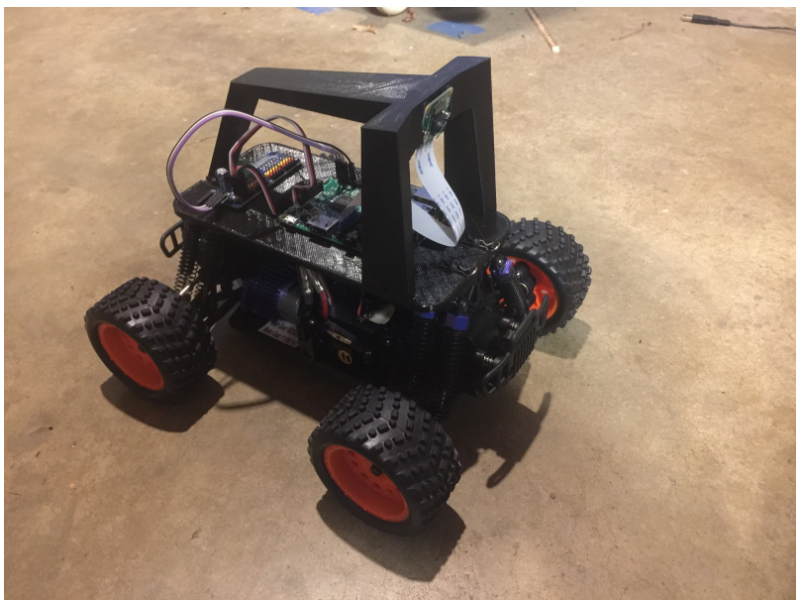

About Donkey®


Donkey is an open source Self Driving Car Platform for remote control cars written in Python. It is developed for hobbyists and students with a focus on allowing fast experimentation and easy community contributions. It supports various kinds of autopilots including autopilots based on neural networks, computer vision and GPS. It is being actively used at the high school and university level for learning and research. It offers a rich graphical interface and includes a simulator so you can experiment with self-driving even before you build a robot. It is supported by an active online community.

Use Donkeycar if you want to:
- Build a robot and teach it to drive itself.
- Experiment with autopilots, neural networks, computer vision, and GPS.
- Compete in self driving races like DIY Robocars, including online simulator races against competitors from around the world.
- Participate in a vibrant online community learning cutting edge techology and having fun doing it.
Buy a pre-made Donkeycar:
If you just want something ready-to-run, we recommend the Waveshare PiRacer Pro, which is a great deal at $262 with a RaspberryPi 4 or $194 if you already have a Pi. Works well with Donkey. You can buy it here.
Build your own Donkey
Building your own car is a pretty straightforwards process with a RC car, a Pi and a few other components. The parts cost about $250 to $300 and take 2 hours to assemble. Here are the main steps to build your own car:
- Assemble hardware.
- Install software.
- Create Donkey App.
- Calibrate your car.
- Start driving.
- Create an autopilot.
- Experiment with simulator.
What do you need to know before starting? (TL;DR nothing)
Donkeycar is designed to be the 'Hello World' of automomous driving; it is simple yet flexible and powerful. No specific prequisite knowledge is required, but it helps if you have some knowledge of:
- Python programming. You do not have to do any programming to use Donkeycar. The file that you edit to configure your car,
myconfig.py, is a Python file. You mostly just uncomment the sections you want to change and edit them; you can avoid common mistakes if you know how Python comments and indentation works. - Raspberry Pi. The Raspberry Pi is the preferred on-board computer for a Donkeycar. It is helpful to have setup and used a Raspberry Pi, but it is not necessary. The Donkeycar documentation describes how to install the software on a RaspberryPi OS, but the specifics of how to install the RaspberryPi OS using Raspberry Pi Imager and how to configure the Raspberry Pi using raspi-config is left to the Raspberry Pi documentation, which is extensive and quite good. I would recommend setting up your Raspberry Pi using the Raspberry Pi documentation and then play with it a little; use the browser to visit websites and watch YouTube videos, like this one taken at the very first outdoor race for a Donkeycar. Use a text editor to write and save a file. Open a terminal and learn how to navigate the file system (see below). If you are comfortable with the Raspberry Pi then you won't have to learn it and Donkeycar at the same time.
- The Linux command line shell. The command line shell is also often called the terminal. You will type commands into the terminal to install and start the Donkeycar software. The Donkeycar documentation describes how this works. It is also helpful to know how navigate the file system and how to list, copy and delete files and directories/folders. You may also access your car remotely; so you will want to know how to enable and connect WIFI and how to enable and start an SSH terminal or VNC session from your host computer to get a command line on your car.
Get driving.
After building a Donkeycar and installing the Donkeycar software you can choose your autopilot template and calibrate your car and get driving!
Modify your car's behavior.
Donkeycar includes a number of pre-built templates that make it easy to get started by just changing configuration. The pre-built templates are all you may ever need, but if you want to go farther you can change a template or make your own. A Donkeycar template is organized as a pipeline of software parts that run in order on each pass through the vehicle loop, reading inputs and writing outputs to the vehicle's software memory as they run. A typical car has a parts that:
- Get images from a camera. Donkeycar supports lots of different kinds of cameras, including 3D cameras and lidar.
- Get position readings from a GPS receiver.
- Get steering and throttle inputs from a game controller or RC controller. Donkeycar supports PS3, PS4, XBox, WiiU, Nimbus and Logitech bluetooth game controllers and any game controller that works with RaspberryPi. Donkeycar also implements a WebUI that allows any browser compatible game controller to be connected and also offers an onscreen touch controller that works with phones.
- Control the car's drivetrain throttle and steering. Donkeycar supports various drivetrains including the ESC+Servo configuration that is common to most RC cars. It also supports various differential drive configurations.
- Save telemetry data such as camera images, steering and throttle inputs, lidar data, etc.
- Drive the car on autopilot. Donkey supports three kinds of autopilots; a deep-learning autopilot, a gps autopilot and a computer vision autopilot. The Deep Learning autopilot supports Tensorflow, Tensorflow Lite, and Pytorch and many model architectures.
If there isn't a Donkeycar part that does what you want then write your own part and add it to a vehicle template.
#Define a vehicle to take and record pictures 10 times per second.
import time
from donkeycar import Vehicle
from donkeycar.parts.cv import CvCam
from donkeycar.parts.tub_v2 import TubWriter
V = Vehicle()
IMAGE_W = 160
IMAGE_H = 120
IMAGE_DEPTH = 3
#Add a camera part
cam = CvCam(image_w=IMAGE_W, image_h=IMAGE_H, image_d=IMAGE_DEPTH)
V.add(cam, outputs=['image'], threaded=True)
#add tub part to record images
tub = TubWriter(path='./dat', inputs=['image'], types=['image_array'])
V.add(tub, inputs=['image'], outputs=['num_records'])
#start the drive loop at 10 Hz
V.start(rate_hz=10)
See the home page or join the Discord server to learn more.
Enjoy
Why the name Donkey?
The ultimate goal of this project is to build something useful. Donkey's were one of the first domesticated pack animals, they're notoriously stubborn, and they are kid safe. Until the car can navigate from one side of a city to the other, we'll hold off naming it after some celestial being.